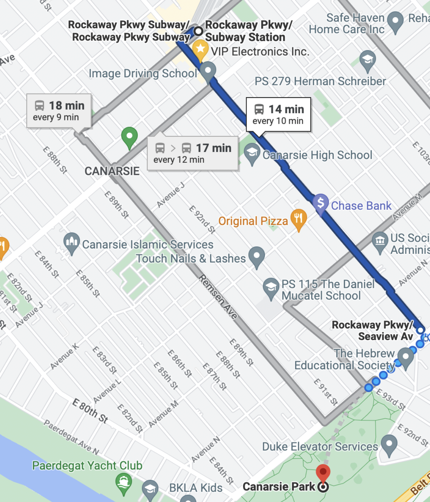

My New York
Home
Essay
Pictures
Around The Area
Location
How to get to Seaview Park⬇️
Take the L train to the last stop, Rockaway Parkway
Take the B42 for 8 stops
Start walking towards the huge park!
Don't forget to have fun!!😁
A link to help you get there
